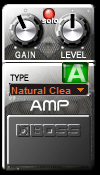
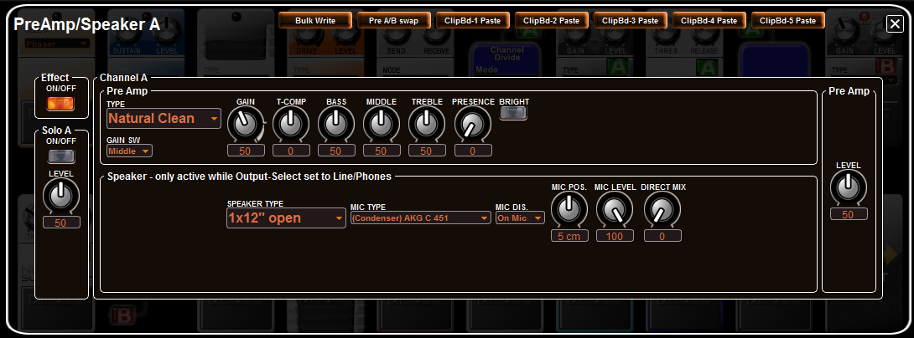

Index
AMP - Amplifier Modeling Editing
Amplifier Modeling can be enabled/disabled, a different amplifier type
selected, and the gain and level knobs set from the main panel in the KATANA FxFloorBoard Editor
using its pedal ON/OFF switch, drop-down selection menu and settings
knobs. One of several dozen amplifier types can be selected and the amplifier settings adjusted.

To
make detailed changes to the settings, double-click on the pedal to open
the editor's Amp/Spkr (Amplifier Modeling) edit panel, which looks like the following
image:

You
can select any one of the many Amplifier Models by picking it from the TYPE
field. You can use only one Amplifier Model TYPE per patch. However, each patch can use
a different Amplifier Model and you can use Assigns to assign parameters
to a foot switch pedal and to the EXP Pedal.
You can even control the many KATANA parameters from your DAW software
using the parameters in the MIDI Implementation section of the owner's
manual.
NOTE:
Each Amplifier Model has its own unique set of parameters with a unique set of
knobs
and parameter fields to configure it, each model with a different appearance.
Therefore, if you change from one to another Amplifier Model, the
knobs and sub-panels will change to support the selected Amplifier Model's knobs and parameters.
The number of possible combinations make it almost impossible to
explain every parameter's capabilities in the online help. See the
owner's manual for more detailed information.
The KATANA
effects and Amplifier Modeling parameters are equivalent to those of
many Roland/Boss or other stomp
boxes, amps and rack mount effects. If you need to know how to adjust
parameters for a given effect or Amplifier Model, see the owners manual
or try one of these websites to see how
your effects work or how your favorite players' use their effects:
If
you want to sound like a player on one of these lists, try to setup
your KATANA effects similar to their rigs.